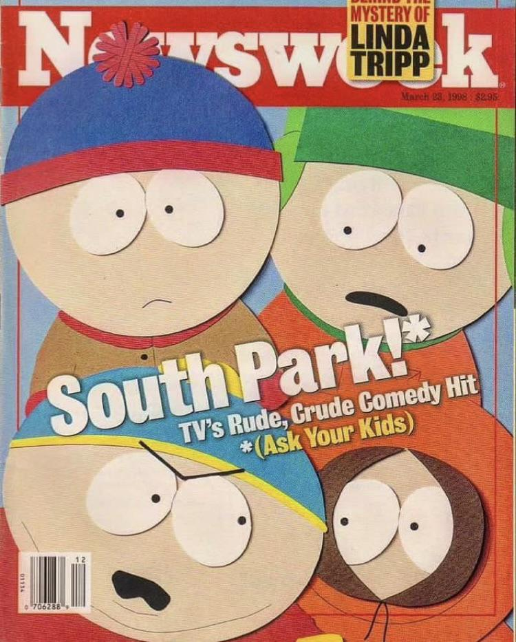
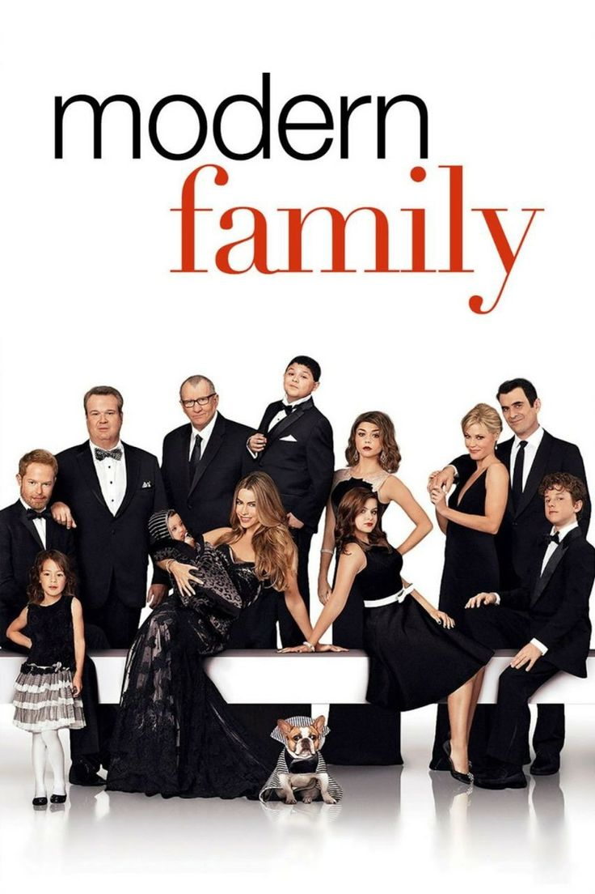

Breaking Bad

- Género: Drama, Crimen, Thriller
- Año: 2008-2013
- Temporadas: 5
- Creador: Vince Gilligan
-
Sinopsis
Un profesor de química de secundaria con cáncer terminal se asocia con un exalumno para fabricar y vender metanfetamina para asegurar el futuro financiero de su familia.
-
Trailer
-
Soundtrack
South Park
- Género: Comedia, Animación, Sátira
- Año: 1997-presente
- Temporadas: 26+
- Creadores: Trey Parker, Matt Stone
-
Sinopsis
Las aventuras de cuatro niños de cuarto grado en el pequeño pueblo de South Park, Colorado, donde ocurren situaciones absurdas y satíricas.
-
Trailer
-
Soundtrack
Modern Family
- Género: Comedia
- Año: 2009-2020
- Temporadas: 11
- Creadores: Christopher Lloyd, Steven Levitan
-
Sinopsis
Una comedia que sigue las vidas de tres familias modernas y diversas relacionadas entre sí, mostrando sus situaciones cómicas y conmovedoras del día a día.
-
Trailer
-
Soundtrack
Vis A Vis

- Género: Drama, Crimen, Thriller
- Año: 2015-2019
- Temporadas: 4
- Creadores: Iván Escobar, Esther Martínez Lobato, Álex Pina
-
Sinopsis
Una joven contable es encarcelada por un delito financiero y debe adaptarse a la vida en prisión, donde conocerá a otras reclusas y enfrentará situaciones peligrosas.
-
Trailer
-
Soundtrack
Harley Quinn

- Género: Animación, Comedia, Acción
- Año: 2019-presente
- Temporadas: 5
- Creadores: Justin Halpern, Patrick Schumacker
-
Sinopsis
Después de separarse del Joker, Harley Quinn busca establecerse como la reina del crimen de Gotham City, formando su propio equipo de villanos y enfrentando nuevos desafíos.
-
Trailer
-
Soundtrack
Ranking de Series Favoritas
- Vis A Vis
- South Park
- Breaking Bad
- Harley Quinn
- Modern Family